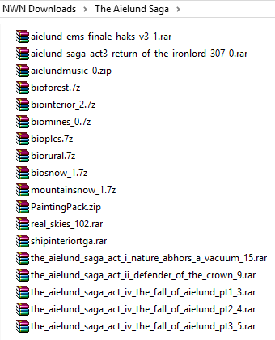
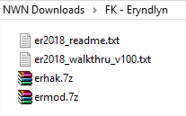
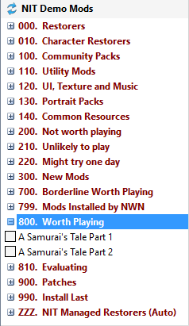
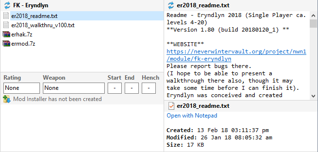
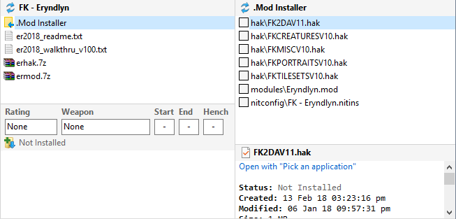
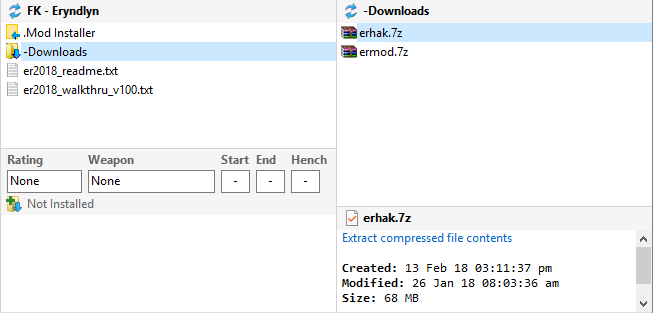

You can move your library of downloaded Mod files to the Installer Tool, providing that you have organised your files into separate folders, which use the Mod's name as the folder name. The folders within your library structure should look something like this...






When you select multiple folders in step 1, the remaining steps are applied to all the Mods. In other words, you don't have to select each Mod in turn, because the Create Installer and Move to -Downloads steps processes all the selected Mods.
Save your customised INI files
Move non-NIT Mod folders to the Installer Tool
Create Restorers to backup installed Files
Create NIT Mods from Restorers